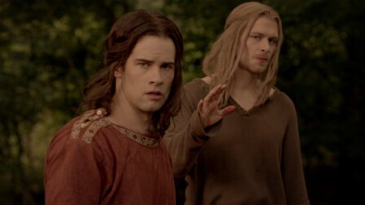
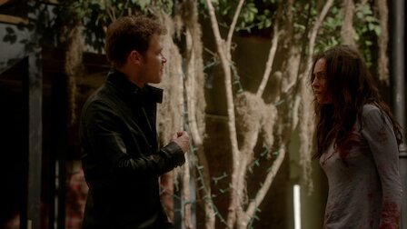
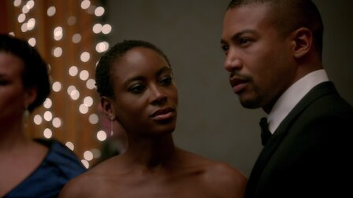
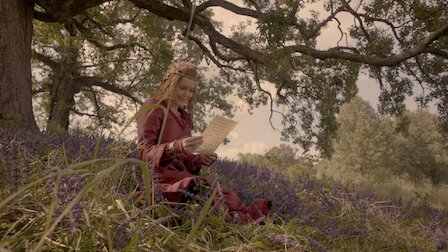
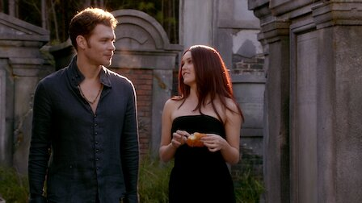
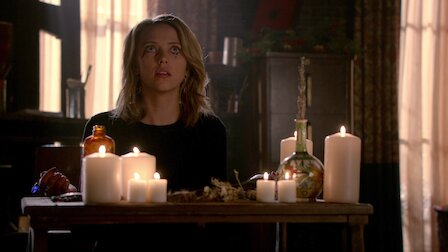
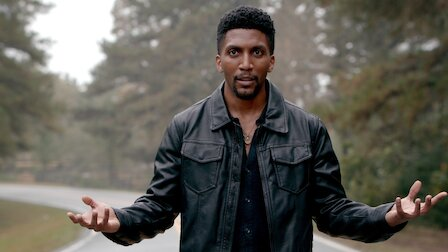

-

1. For the Next Millennium
In the wake of their showdown with Dahlia, the stakes are raised for the splintered Mikaelson clan. Meanwhile, a serial
killer may be on the loose.
-

2. You Hung the Moon
When Hayley doesn't show up during the full moon, Elijah and Jackson fear poachers. Klaus receives a dire prophecy about
the future of the Mikaelsons.
-
3. I'll See You in Hell or New Orleans
Klaus and Elijah reunite to investigate Lucien's motives. Hayley copes using unusual methods. A mysterious figure has an
offer for Marcel.
-

4. A Walk on the Wild Side
Elijah checks up on an old acquaintance at a gala thrown by a group of ancient vampires, where a mysterious woman
approaches Marcel with an offer..
-

5. The Axeman's Letter
Elijah suspects that Tristan is hiding something and enlists Marcel's help to uncover the truth. Klaus receives an
unexpected visit.
-

6. Beautiful Mistake
Elijah and Freya realize that Rebekah may be the target of the Strix's latest plan. Klaus spends time with Aurora to
find out where her loyalties lie.
-
7. Out of the Easy
With a dire prophecy looming over them, Klaus and Elijah invite Lucien, Tristan and Aurora to a Thanksgiving gathering,
hoping to negotiate a truce.
-
8. The Other Girl in New Orleans
Klaus is forced to follow Aurora's devious clues to try to help Cami. Meanwhile, Elijah, Freya and Hayley take drastic
measures against Tristan.
-

9. Savior
Freya attempts to reverse a crippling curse that may expose one of her siblings, even as she finds herself the target of
the Strix's latest plan.
-

10. A Ghost Along the Mississippi
Klaus declares war on Aurora and Tristan. Vincent must use his magic against his will. Hayley and Jackson become pawns
in Tristan's twisted game.